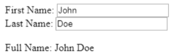

Angular
Official web-siteWhat is frameworks?
The most popular definitions
— blanks, templates for the software platform, defining the architecture of the software system
– software products that simplify the creation and support of technically complex or loaded projects
Angular
React

Vue
Meteor
Ember

Backbone
Aurelia
Polymer
Mithril
History

Miško Hevery

Adam Abrons
What is the feature of Angular?
Key facts about Angular
• The template language is Typescript, which is a programming language from Microsoft. Although Typescript is the primary language for Angular, applications can also be written using languages such as Dart or JavaScript.
• Angular is supported by Google.
• Angular is aimed at developing single-page applications, i.e. SPA-solutions (Single Page Application). Popular social networking applications (Twitter, Instagram and Facebook) are examples.
• Angular provides a client-side MVC infrastructure that helps in running and building dynamic applications with a state-of-the-art level of quality.
• Apps written in Angular are compatible with different browsers. Angular automatically handles JavaScript code that is appropriate for each browser.
• Clean and accurate user interface design.
• Easy routing.
• Structure facilitates the Angular extension of the syntax of HTML and easily creates reusable components according to directives.
• In General, Angular is a framework for creating large-scale, high-performance, and easy - to-maintain web applications.
Possibilities
1. It is easy to test your code
2. Easily create personalized document object models (Document Object Model, DOM).
3. Data modeling is limited to using small data models, which makes the code simple and easy to test.
4. Angular is prepared for mobile devices and desktop – one framework for many platforms.
Code examples
<!DOCTYPE html>
<html>
<script src="/lib/angular-1.4.8.min.js"></script>
<body>
<div ng-app>
<p>My first expression: {{ 5 + 5 }}</p>
</div>
</body>
</html>
Result:
My first expression: 10
<!DOCTYPE html>
<html>
<script src="/lib/angular-1.4.8.min.js"></script>
<body>
<div ng-app="myApp" ng-controller="myCtrl">
{{ firstName + " " + lastName }}
</div>
<script>
var app = angular.module("myApp", []);
app.controller("myCtrl", function($scope) {
$scope.firstName = "John";
$scope.lastName = "Doe";
});
</script>
</body>
</html>
Result:
John Doe
<!DOCTYPE html>
<html>
<script src="/lib/angular-1.4.8.min.js"></script>
<body>
<div ng-app="myApp" ng-controller="myCtrl">
First Name: <input type="text" ng-model="firstName"><br>
Last Name: <input type="text" ng-model="lastName"><br>
<br>
Full Name: {{firstName + " " + lastName}}
</div>
<script>
var app = angular.module('myApp', []);
app.controller('myCtrl', function($scope) {
$scope.firstName = "John";
$scope.lastName = "Doe";
});
</script>
</body>
</html>
Result:
